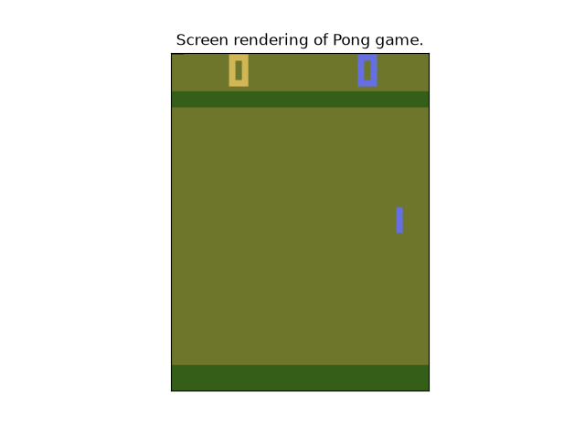

Note
Go to the end to download the full example code.
Exporting TorchRL modules#
Author: Vincent Moens
Note
To run this tutorial in a notebook, add an installation cell at the beginning containing:
!pip install tensordict !pip install torchrl !pip install "gymnasium[atari]"
Introduction#
Learning a policy has little value if that policy cannot be deployed in real-world settings.
As shown in other tutorials, TorchRL has a strong focus on modularity and composability: thanks to tensordict,
the components of the library can be written in the most generic way there is by abstracting their signature to a
mere set of operations on an input TensorDict.
This may give the impression that the library is bound to be used only for training, as typical low-level execution
hardwares (edge devices, robots, arduino, Raspberry Pi) do not execute python code, let alone with pytorch, tensordict
or torchrl installed.
Fortunately, PyTorch provides a full ecosystem of solutions to export code and trained models to devices and hardwares, and TorchRL is fully equipped to interact with it. It is possible to choose from a varied set of backends, including ONNX or AOTInductor examplified in this tutorial. This tutorial gives a quick overview of how a trained model can be isolated and shipped as a standalone executable to be exported on hardware.
Key learnings:
Export any TorchRL module after training;
Using various backends;
Testing your exported model.
Fast recap: a simple TorchRL training loop#
In this section, we reproduce the training loop from the last Getting Started tutorial, slightly adapted to be used with Atari games as they are rendered by the gymnasium library. We will stick to the DQN example, and show how a policy that outputs a distribution over values can be used instead later.
import time
from pathlib import Path
import numpy as np
import torch
from tensordict.nn import (
TensorDictModule as Mod,
TensorDictSequential,
TensorDictSequential as Seq,
)
from torch.optim import Adam
from torchrl._utils import timeit
from torchrl.collectors import Collector
from torchrl.data import LazyTensorStorage, ReplayBuffer
from torchrl.envs import (
Compose,
GrayScale,
GymEnv,
Resize,
set_exploration_type,
StepCounter,
ToTensorImage,
TransformedEnv,
)
from torchrl.modules import ConvNet, EGreedyModule, QValueModule
from torchrl.objectives import DQNLoss, SoftUpdate
torch.manual_seed(0)
env = TransformedEnv(
GymEnv("ALE/Pong-v5", categorical_action_encoding=True),
Compose(
ToTensorImage(), Resize(84, interpolation="nearest"), GrayScale(), StepCounter()
),
)
env.set_seed(0)
value_mlp = ConvNet.default_atari_dqn(num_actions=env.action_spec.space.n)
value_net = Mod(value_mlp, in_keys=["pixels"], out_keys=["action_value"])
policy = Seq(value_net, QValueModule(spec=env.action_spec))
exploration_module = EGreedyModule(
env.action_spec, annealing_num_steps=100_000, eps_init=0.5
)
policy_explore = Seq(policy, exploration_module)
init_rand_steps = 5000
frames_per_batch = 100
optim_steps = 10
collector = Collector(
env,
policy_explore,
frames_per_batch=frames_per_batch,
total_frames=-1,
init_random_frames=init_rand_steps,
)
rb = ReplayBuffer(storage=LazyTensorStorage(100_000))
loss = DQNLoss(value_network=policy, action_space=env.action_spec, delay_value=True)
optim = Adam(loss.parameters())
updater = SoftUpdate(loss, eps=0.99)
total_count = 0
total_episodes = 0
t0 = time.time()
for data in collector:
# Write data in replay buffer
rb.extend(data)
max_length = rb[:]["next", "step_count"].max()
if len(rb) > init_rand_steps:
# Optim loop (we do several optim steps
# per batch collected for efficiency)
for _ in range(optim_steps):
sample = rb.sample(128)
loss_vals = loss(sample)
loss_vals["loss"].backward()
optim.step()
optim.zero_grad()
# Update exploration factor
exploration_module.step(data.numel())
# Update target params
updater.step()
total_count += data.numel()
total_episodes += data["next", "done"].sum()
if max_length > 200:
break
Exporting a TensorDictModule-based policy#
TensorDict allowed us to build a policy with a great flexibility: from a regular Module that
outputs action values from an observation, we added a QValueModule module that
read these values and computed an action using some heuristic (e.g., an argmax call).
However, there’s a small technical catch in our case: the environment (the actual Atari game) doesn’t return grayscale, 84x84 images but raw screen-size color ones. The transforms we appended to the environment make sure that the images can be read by the model. We can see that, from the training perspective, the boundary between environment and model is blurry, but at execution time things are much clearer: the model should take care of transforming the input data (images) to the format that can be processed by our CNN.
Here again, the magic of tensordict will unblock us: it happens that most of local (non-recursive) TorchRL’s
transforms can be used both as environment transforms or preprocessing blocks within a Module
instance. Let’s see how we can prepend them to our policy:
policy_transform = TensorDictSequential(
env.transform[
:-1
], # the last transform is a step counter which we don't need for preproc
policy_explore.requires_grad_(
False
), # Using the explorative version of the policy for didactic purposes, see below.
)
We create a fake input, and pass it to export() with the policy. This will give a “raw” python
function that will read our input tensor and output an action without any reference to TorchRL or tensordict modules.
A good practice is to call select_out_keys() to let the model know that
we only want a certain set of outputs (in case the policy returns more than one tensor).
fake_td = env.base_env.fake_tensordict()
pixels = fake_td["pixels"]
with set_exploration_type("DETERMINISTIC"):
exported_policy = torch.export.export(
# Select only the "action" output key
policy_transform.select_out_keys("action"),
args=(),
kwargs={"pixels": pixels},
strict=False,
)
Representing the policy can be quite insightful: we can see that the first operations are a permute, a div, unsqueeze, resize followed by the convolutional and MLP layers.
print("Deterministic policy")
exported_policy.graph_module.print_readable()
Deterministic policy
class GraphModule(torch.nn.Module):
def forward(self, p_module_1_module_0_module_0_module_0_0_weight: "f32[32, 1, 8, 8]", p_module_1_module_0_module_0_module_0_0_bias: "f32[32]", p_module_1_module_0_module_0_module_0_2_weight: "f32[64, 32, 4, 4]", p_module_1_module_0_module_0_module_0_2_bias: "f32[64]", p_module_1_module_0_module_0_module_0_4_weight: "f32[64, 64, 3, 3]", p_module_1_module_0_module_0_module_0_4_bias: "f32[64]", p_module_1_module_0_module_0_module_1_0_weight: "f32[512, 3136]", p_module_1_module_0_module_0_module_1_0_bias: "f32[512]", p_module_1_module_0_module_0_module_1_2_weight: "f32[6, 512]", p_module_1_module_0_module_0_module_1_2_bias: "f32[6]", b_module_1_module_1_eps_init: "f32[]", b_module_1_module_1_eps_end: "f32[]", b_module_1_module_1_eps: "f32[]", pixels: "u8[210, 160, 3]"):
# File: /pytorch/rl/torchrl/envs/transforms/_base.py:571 in forward, code: data = self._apply_transform(data)
permute: "u8[3, 210, 160]" = torch.ops.aten.permute.default(pixels, [-1, -3, -2]); pixels = None
div: "f32[3, 210, 160]" = torch.ops.aten.div.Tensor(permute, 255); permute = None
_assert_tensor_metadata_default = torch.ops.aten._assert_tensor_metadata.default(div, dtype = torch.float32, device = device(type='cpu'), layout = torch.strided); _assert_tensor_metadata_default = None
to: "f32[3, 210, 160]" = torch.ops.aten.to.dtype(div, torch.float32); div = None
unsqueeze: "f32[1, 3, 210, 160]" = torch.ops.aten.unsqueeze.default(to, 0); to = None
upsample_nearest2d: "f32[1, 3, 84, 84]" = torch.ops.aten.upsample_nearest2d.vec(unsqueeze, [84, 84], None); unsqueeze = None
squeeze: "f32[3, 84, 84]" = torch.ops.aten.squeeze.dim(upsample_nearest2d, 0); upsample_nearest2d = None
unbind = torch.ops.aten.unbind.int(squeeze, -3); squeeze = None
getitem: "f32[84, 84]" = unbind[0]
getitem_1: "f32[84, 84]" = unbind[1]
getitem_2: "f32[84, 84]" = unbind[2]; unbind = None
mul: "f32[84, 84]" = torch.ops.aten.mul.Tensor(getitem, 0.2989); getitem = None
mul_1: "f32[84, 84]" = torch.ops.aten.mul.Tensor(getitem_1, 0.587); getitem_1 = None
add: "f32[84, 84]" = torch.ops.aten.add.Tensor(mul, mul_1); mul = mul_1 = None
mul_2: "f32[84, 84]" = torch.ops.aten.mul.Tensor(getitem_2, 0.114); getitem_2 = None
add_1: "f32[84, 84]" = torch.ops.aten.add.Tensor(add, mul_2); add = mul_2 = None
_assert_tensor_metadata_default_1 = torch.ops.aten._assert_tensor_metadata.default(add_1, dtype = torch.float32, device = device(type='cpu'), layout = torch.strided); _assert_tensor_metadata_default_1 = None
to_1: "f32[84, 84]" = torch.ops.aten.to.dtype(add_1, torch.float32); add_1 = None
unsqueeze_1: "f32[1, 84, 84]" = torch.ops.aten.unsqueeze.default(to_1, -3); to_1 = None
# File: /opt/conda/lib/python3.11/site-packages/torch/nn/modules/conv.py:565 in forward, code: return self._conv_forward(input, self.weight, self.bias)
conv2d: "f32[32, 20, 20]" = torch.ops.aten.conv2d.default(unsqueeze_1, p_module_1_module_0_module_0_module_0_0_weight, p_module_1_module_0_module_0_module_0_0_bias, [4, 4]); unsqueeze_1 = p_module_1_module_0_module_0_module_0_0_weight = p_module_1_module_0_module_0_module_0_0_bias = None
# File: /opt/conda/lib/python3.11/site-packages/torch/nn/modules/activation.py:143 in forward, code: return F.relu(input, inplace=self.inplace)
relu: "f32[32, 20, 20]" = torch.ops.aten.relu.default(conv2d); conv2d = None
# File: /opt/conda/lib/python3.11/site-packages/torch/nn/modules/conv.py:565 in forward, code: return self._conv_forward(input, self.weight, self.bias)
conv2d_1: "f32[64, 9, 9]" = torch.ops.aten.conv2d.default(relu, p_module_1_module_0_module_0_module_0_2_weight, p_module_1_module_0_module_0_module_0_2_bias, [2, 2]); relu = p_module_1_module_0_module_0_module_0_2_weight = p_module_1_module_0_module_0_module_0_2_bias = None
# File: /opt/conda/lib/python3.11/site-packages/torch/nn/modules/activation.py:143 in forward, code: return F.relu(input, inplace=self.inplace)
relu_1: "f32[64, 9, 9]" = torch.ops.aten.relu.default(conv2d_1); conv2d_1 = None
# File: /opt/conda/lib/python3.11/site-packages/torch/nn/modules/conv.py:565 in forward, code: return self._conv_forward(input, self.weight, self.bias)
conv2d_2: "f32[64, 7, 7]" = torch.ops.aten.conv2d.default(relu_1, p_module_1_module_0_module_0_module_0_4_weight, p_module_1_module_0_module_0_module_0_4_bias); relu_1 = p_module_1_module_0_module_0_module_0_4_weight = p_module_1_module_0_module_0_module_0_4_bias = None
# File: /opt/conda/lib/python3.11/site-packages/torch/nn/modules/activation.py:143 in forward, code: return F.relu(input, inplace=self.inplace)
relu_2: "f32[64, 7, 7]" = torch.ops.aten.relu.default(conv2d_2); conv2d_2 = None
# File: /pytorch/rl/torchrl/modules/models/utils.py:84 in forward, code: value = value.flatten(-self.ndims_in, -1)
flatten: "f32[3136]" = torch.ops.aten.flatten.using_ints(relu_2, -3); relu_2 = None
# File: /opt/conda/lib/python3.11/site-packages/torch/nn/modules/linear.py:134 in forward, code: return F.linear(input, self.weight, self.bias)
linear: "f32[512]" = torch.ops.aten.linear.default(flatten, p_module_1_module_0_module_0_module_1_0_weight, p_module_1_module_0_module_0_module_1_0_bias); flatten = p_module_1_module_0_module_0_module_1_0_weight = p_module_1_module_0_module_0_module_1_0_bias = None
# File: /opt/conda/lib/python3.11/site-packages/torch/nn/modules/activation.py:143 in forward, code: return F.relu(input, inplace=self.inplace)
relu_3: "f32[512]" = torch.ops.aten.relu.default(linear); linear = None
# File: /opt/conda/lib/python3.11/site-packages/torch/nn/modules/linear.py:134 in forward, code: return F.linear(input, self.weight, self.bias)
linear_1: "f32[6]" = torch.ops.aten.linear.default(relu_3, p_module_1_module_0_module_0_module_1_2_weight, p_module_1_module_0_module_0_module_1_2_bias); relu_3 = p_module_1_module_0_module_0_module_1_2_weight = p_module_1_module_0_module_0_module_1_2_bias = None
# File: /pytorch/rl/torchrl/modules/tensordict_module/actors.py:649 in forward, code: action = self.action_func_mapping[self.action_space](action_values)
argmax: "i64[]" = torch.ops.aten.argmax.default(linear_1, -1)
_assert_tensor_metadata_default_2 = torch.ops.aten._assert_tensor_metadata.default(argmax, dtype = torch.int64, device = device(type='cpu'), layout = torch.strided); _assert_tensor_metadata_default_2 = None
to_2: "i64[]" = torch.ops.aten.to.dtype(argmax, torch.int64); argmax = None
# File: /pytorch/rl/torchrl/modules/tensordict_module/actors.py:654 in forward, code: chosen_action_value = action_value_func(action_values, action)
unsqueeze_2: "i64[1]" = torch.ops.aten.unsqueeze.default(to_2, -1)
gather: "f32[1]" = torch.ops.aten.gather.default(linear_1, -1, unsqueeze_2); linear_1 = unsqueeze_2 = gather = None
return (to_2,)
'class GraphModule(torch.nn.Module):\n def forward(self, p_module_1_module_0_module_0_module_0_0_weight: "f32[32, 1, 8, 8]", p_module_1_module_0_module_0_module_0_0_bias: "f32[32]", p_module_1_module_0_module_0_module_0_2_weight: "f32[64, 32, 4, 4]", p_module_1_module_0_module_0_module_0_2_bias: "f32[64]", p_module_1_module_0_module_0_module_0_4_weight: "f32[64, 64, 3, 3]", p_module_1_module_0_module_0_module_0_4_bias: "f32[64]", p_module_1_module_0_module_0_module_1_0_weight: "f32[512, 3136]", p_module_1_module_0_module_0_module_1_0_bias: "f32[512]", p_module_1_module_0_module_0_module_1_2_weight: "f32[6, 512]", p_module_1_module_0_module_0_module_1_2_bias: "f32[6]", b_module_1_module_1_eps_init: "f32[]", b_module_1_module_1_eps_end: "f32[]", b_module_1_module_1_eps: "f32[]", pixels: "u8[210, 160, 3]"):\n # File: /pytorch/rl/torchrl/envs/transforms/_base.py:571 in forward, code: data = self._apply_transform(data)\n permute: "u8[3, 210, 160]" = torch.ops.aten.permute.default(pixels, [-1, -3, -2]); pixels = None\n div: "f32[3, 210, 160]" = torch.ops.aten.div.Tensor(permute, 255); permute = None\n _assert_tensor_metadata_default = torch.ops.aten._assert_tensor_metadata.default(div, dtype = torch.float32, device = device(type=\'cpu\'), layout = torch.strided); _assert_tensor_metadata_default = None\n to: "f32[3, 210, 160]" = torch.ops.aten.to.dtype(div, torch.float32); div = None\n unsqueeze: "f32[1, 3, 210, 160]" = torch.ops.aten.unsqueeze.default(to, 0); to = None\n upsample_nearest2d: "f32[1, 3, 84, 84]" = torch.ops.aten.upsample_nearest2d.vec(unsqueeze, [84, 84], None); unsqueeze = None\n squeeze: "f32[3, 84, 84]" = torch.ops.aten.squeeze.dim(upsample_nearest2d, 0); upsample_nearest2d = None\n unbind = torch.ops.aten.unbind.int(squeeze, -3); squeeze = None\n getitem: "f32[84, 84]" = unbind[0]\n getitem_1: "f32[84, 84]" = unbind[1]\n getitem_2: "f32[84, 84]" = unbind[2]; unbind = None\n mul: "f32[84, 84]" = torch.ops.aten.mul.Tensor(getitem, 0.2989); getitem = None\n mul_1: "f32[84, 84]" = torch.ops.aten.mul.Tensor(getitem_1, 0.587); getitem_1 = None\n add: "f32[84, 84]" = torch.ops.aten.add.Tensor(mul, mul_1); mul = mul_1 = None\n mul_2: "f32[84, 84]" = torch.ops.aten.mul.Tensor(getitem_2, 0.114); getitem_2 = None\n add_1: "f32[84, 84]" = torch.ops.aten.add.Tensor(add, mul_2); add = mul_2 = None\n _assert_tensor_metadata_default_1 = torch.ops.aten._assert_tensor_metadata.default(add_1, dtype = torch.float32, device = device(type=\'cpu\'), layout = torch.strided); _assert_tensor_metadata_default_1 = None\n to_1: "f32[84, 84]" = torch.ops.aten.to.dtype(add_1, torch.float32); add_1 = None\n unsqueeze_1: "f32[1, 84, 84]" = torch.ops.aten.unsqueeze.default(to_1, -3); to_1 = None\n\n # File: /opt/conda/lib/python3.11/site-packages/torch/nn/modules/conv.py:565 in forward, code: return self._conv_forward(input, self.weight, self.bias)\n conv2d: "f32[32, 20, 20]" = torch.ops.aten.conv2d.default(unsqueeze_1, p_module_1_module_0_module_0_module_0_0_weight, p_module_1_module_0_module_0_module_0_0_bias, [4, 4]); unsqueeze_1 = p_module_1_module_0_module_0_module_0_0_weight = p_module_1_module_0_module_0_module_0_0_bias = None\n\n # File: /opt/conda/lib/python3.11/site-packages/torch/nn/modules/activation.py:143 in forward, code: return F.relu(input, inplace=self.inplace)\n relu: "f32[32, 20, 20]" = torch.ops.aten.relu.default(conv2d); conv2d = None\n\n # File: /opt/conda/lib/python3.11/site-packages/torch/nn/modules/conv.py:565 in forward, code: return self._conv_forward(input, self.weight, self.bias)\n conv2d_1: "f32[64, 9, 9]" = torch.ops.aten.conv2d.default(relu, p_module_1_module_0_module_0_module_0_2_weight, p_module_1_module_0_module_0_module_0_2_bias, [2, 2]); relu = p_module_1_module_0_module_0_module_0_2_weight = p_module_1_module_0_module_0_module_0_2_bias = None\n\n # File: /opt/conda/lib/python3.11/site-packages/torch/nn/modules/activation.py:143 in forward, code: return F.relu(input, inplace=self.inplace)\n relu_1: "f32[64, 9, 9]" = torch.ops.aten.relu.default(conv2d_1); conv2d_1 = None\n\n # File: /opt/conda/lib/python3.11/site-packages/torch/nn/modules/conv.py:565 in forward, code: return self._conv_forward(input, self.weight, self.bias)\n conv2d_2: "f32[64, 7, 7]" = torch.ops.aten.conv2d.default(relu_1, p_module_1_module_0_module_0_module_0_4_weight, p_module_1_module_0_module_0_module_0_4_bias); relu_1 = p_module_1_module_0_module_0_module_0_4_weight = p_module_1_module_0_module_0_module_0_4_bias = None\n\n # File: /opt/conda/lib/python3.11/site-packages/torch/nn/modules/activation.py:143 in forward, code: return F.relu(input, inplace=self.inplace)\n relu_2: "f32[64, 7, 7]" = torch.ops.aten.relu.default(conv2d_2); conv2d_2 = None\n\n # File: /pytorch/rl/torchrl/modules/models/utils.py:84 in forward, code: value = value.flatten(-self.ndims_in, -1)\n flatten: "f32[3136]" = torch.ops.aten.flatten.using_ints(relu_2, -3); relu_2 = None\n\n # File: /opt/conda/lib/python3.11/site-packages/torch/nn/modules/linear.py:134 in forward, code: return F.linear(input, self.weight, self.bias)\n linear: "f32[512]" = torch.ops.aten.linear.default(flatten, p_module_1_module_0_module_0_module_1_0_weight, p_module_1_module_0_module_0_module_1_0_bias); flatten = p_module_1_module_0_module_0_module_1_0_weight = p_module_1_module_0_module_0_module_1_0_bias = None\n\n # File: /opt/conda/lib/python3.11/site-packages/torch/nn/modules/activation.py:143 in forward, code: return F.relu(input, inplace=self.inplace)\n relu_3: "f32[512]" = torch.ops.aten.relu.default(linear); linear = None\n\n # File: /opt/conda/lib/python3.11/site-packages/torch/nn/modules/linear.py:134 in forward, code: return F.linear(input, self.weight, self.bias)\n linear_1: "f32[6]" = torch.ops.aten.linear.default(relu_3, p_module_1_module_0_module_0_module_1_2_weight, p_module_1_module_0_module_0_module_1_2_bias); relu_3 = p_module_1_module_0_module_0_module_1_2_weight = p_module_1_module_0_module_0_module_1_2_bias = None\n\n # File: /pytorch/rl/torchrl/modules/tensordict_module/actors.py:649 in forward, code: action = self.action_func_mapping[self.action_space](action_values)\n argmax: "i64[]" = torch.ops.aten.argmax.default(linear_1, -1)\n _assert_tensor_metadata_default_2 = torch.ops.aten._assert_tensor_metadata.default(argmax, dtype = torch.int64, device = device(type=\'cpu\'), layout = torch.strided); _assert_tensor_metadata_default_2 = None\n to_2: "i64[]" = torch.ops.aten.to.dtype(argmax, torch.int64); argmax = None\n\n # File: /pytorch/rl/torchrl/modules/tensordict_module/actors.py:654 in forward, code: chosen_action_value = action_value_func(action_values, action)\n unsqueeze_2: "i64[1]" = torch.ops.aten.unsqueeze.default(to_2, -1)\n gather: "f32[1]" = torch.ops.aten.gather.default(linear_1, -1, unsqueeze_2); linear_1 = unsqueeze_2 = gather = None\n return (to_2,)\n'
As a final check, we can execute the policy with a dummy input. The output (for a single image) should be an integer from 0 to 6 representing the action to be executed in the game.
output = exported_policy.module()(pixels=pixels)
print("Exported module output", output)
Exported module output tensor(1)
Further details on exporting TensorDictModule instances can be found in the tensordict
documentation.
Note
Exporting modules that take and output nested keys is perfectly fine. The corresponding kwargs will be the “_”.join(key) version of the key, i.e., the (“group0”, “agent0”, “obs”) key will correspond to the “group0_agent0_obs” keyword argument. Colliding keys (e.g., (“group0_agent0”, “obs”) and (“group0”, “agent0_obs”) may lead to undefined behaviours and should be avoided at all cost. Obviously, key names should also always produce valid keyword arguments, i.e., they should not contain special characters such as spaces or commas.
torch.export has many other features that we will explore further below. Before this, let us just do a small
digression on exploration and stochastic policies in the context of test-time inference, as well as recurrent
policies.
Working with stochastic policies#
As you probably noted, above we used the set_exploration_type context manager to control
the behaviour of the policy. If the policy is stochastic (e.g., the policy outputs a distribution over the action
space like it is the case in PPO or other similar on-policy algorithms) or explorative (with an exploration module
appended like E-Greedy, additive gaussian or Ornstein-Uhlenbeck) we may want or not want to use that exploration
strategy in its exported version.
Fortunately, export utils can understand that context manager and as long as the exportation occurs within the right
context manager, the behaviour of the policy should match what is indicated. To demonstrate this, let us try with
another exploration type:
with set_exploration_type("RANDOM"):
exported_stochastic_policy = torch.export.export(
policy_transform.select_out_keys("action"),
args=(),
kwargs={"pixels": pixels},
strict=False,
)
Our exported policy should now have a random module at the end of the call stack, unlike the previous version. Indeed, the last three operations are: generate a random integer between 0 and 6, use a random mask and select the network output or the random action based on the value in the mask.
print("Stochastic policy")
exported_stochastic_policy.graph_module.print_readable()
Stochastic policy
class GraphModule(torch.nn.Module):
def forward(self, p_module_1_module_0_module_0_module_0_0_weight: "f32[32, 1, 8, 8]", p_module_1_module_0_module_0_module_0_0_bias: "f32[32]", p_module_1_module_0_module_0_module_0_2_weight: "f32[64, 32, 4, 4]", p_module_1_module_0_module_0_module_0_2_bias: "f32[64]", p_module_1_module_0_module_0_module_0_4_weight: "f32[64, 64, 3, 3]", p_module_1_module_0_module_0_module_0_4_bias: "f32[64]", p_module_1_module_0_module_0_module_1_0_weight: "f32[512, 3136]", p_module_1_module_0_module_0_module_1_0_bias: "f32[512]", p_module_1_module_0_module_0_module_1_2_weight: "f32[6, 512]", p_module_1_module_0_module_0_module_1_2_bias: "f32[6]", b_module_1_module_1_eps_init: "f32[]", b_module_1_module_1_eps_end: "f32[]", b_module_1_module_1_eps: "f32[]", pixels: "u8[210, 160, 3]"):
# File: /pytorch/rl/torchrl/envs/transforms/_base.py:571 in forward, code: data = self._apply_transform(data)
permute: "u8[3, 210, 160]" = torch.ops.aten.permute.default(pixels, [-1, -3, -2]); pixels = None
div: "f32[3, 210, 160]" = torch.ops.aten.div.Tensor(permute, 255); permute = None
_assert_tensor_metadata_default = torch.ops.aten._assert_tensor_metadata.default(div, dtype = torch.float32, device = device(type='cpu'), layout = torch.strided); _assert_tensor_metadata_default = None
to: "f32[3, 210, 160]" = torch.ops.aten.to.dtype(div, torch.float32); div = None
unsqueeze: "f32[1, 3, 210, 160]" = torch.ops.aten.unsqueeze.default(to, 0); to = None
upsample_nearest2d: "f32[1, 3, 84, 84]" = torch.ops.aten.upsample_nearest2d.vec(unsqueeze, [84, 84], None); unsqueeze = None
squeeze: "f32[3, 84, 84]" = torch.ops.aten.squeeze.dim(upsample_nearest2d, 0); upsample_nearest2d = None
unbind = torch.ops.aten.unbind.int(squeeze, -3); squeeze = None
getitem: "f32[84, 84]" = unbind[0]
getitem_1: "f32[84, 84]" = unbind[1]
getitem_2: "f32[84, 84]" = unbind[2]; unbind = None
mul: "f32[84, 84]" = torch.ops.aten.mul.Tensor(getitem, 0.2989); getitem = None
mul_1: "f32[84, 84]" = torch.ops.aten.mul.Tensor(getitem_1, 0.587); getitem_1 = None
add: "f32[84, 84]" = torch.ops.aten.add.Tensor(mul, mul_1); mul = mul_1 = None
mul_2: "f32[84, 84]" = torch.ops.aten.mul.Tensor(getitem_2, 0.114); getitem_2 = None
add_1: "f32[84, 84]" = torch.ops.aten.add.Tensor(add, mul_2); add = mul_2 = None
_assert_tensor_metadata_default_1 = torch.ops.aten._assert_tensor_metadata.default(add_1, dtype = torch.float32, device = device(type='cpu'), layout = torch.strided); _assert_tensor_metadata_default_1 = None
to_1: "f32[84, 84]" = torch.ops.aten.to.dtype(add_1, torch.float32); add_1 = None
unsqueeze_1: "f32[1, 84, 84]" = torch.ops.aten.unsqueeze.default(to_1, -3); to_1 = None
# File: /opt/conda/lib/python3.11/site-packages/torch/nn/modules/conv.py:565 in forward, code: return self._conv_forward(input, self.weight, self.bias)
conv2d: "f32[32, 20, 20]" = torch.ops.aten.conv2d.default(unsqueeze_1, p_module_1_module_0_module_0_module_0_0_weight, p_module_1_module_0_module_0_module_0_0_bias, [4, 4]); unsqueeze_1 = p_module_1_module_0_module_0_module_0_0_weight = p_module_1_module_0_module_0_module_0_0_bias = None
# File: /opt/conda/lib/python3.11/site-packages/torch/nn/modules/activation.py:143 in forward, code: return F.relu(input, inplace=self.inplace)
relu: "f32[32, 20, 20]" = torch.ops.aten.relu.default(conv2d); conv2d = None
# File: /opt/conda/lib/python3.11/site-packages/torch/nn/modules/conv.py:565 in forward, code: return self._conv_forward(input, self.weight, self.bias)
conv2d_1: "f32[64, 9, 9]" = torch.ops.aten.conv2d.default(relu, p_module_1_module_0_module_0_module_0_2_weight, p_module_1_module_0_module_0_module_0_2_bias, [2, 2]); relu = p_module_1_module_0_module_0_module_0_2_weight = p_module_1_module_0_module_0_module_0_2_bias = None
# File: /opt/conda/lib/python3.11/site-packages/torch/nn/modules/activation.py:143 in forward, code: return F.relu(input, inplace=self.inplace)
relu_1: "f32[64, 9, 9]" = torch.ops.aten.relu.default(conv2d_1); conv2d_1 = None
# File: /opt/conda/lib/python3.11/site-packages/torch/nn/modules/conv.py:565 in forward, code: return self._conv_forward(input, self.weight, self.bias)
conv2d_2: "f32[64, 7, 7]" = torch.ops.aten.conv2d.default(relu_1, p_module_1_module_0_module_0_module_0_4_weight, p_module_1_module_0_module_0_module_0_4_bias); relu_1 = p_module_1_module_0_module_0_module_0_4_weight = p_module_1_module_0_module_0_module_0_4_bias = None
# File: /opt/conda/lib/python3.11/site-packages/torch/nn/modules/activation.py:143 in forward, code: return F.relu(input, inplace=self.inplace)
relu_2: "f32[64, 7, 7]" = torch.ops.aten.relu.default(conv2d_2); conv2d_2 = None
# File: /pytorch/rl/torchrl/modules/models/utils.py:84 in forward, code: value = value.flatten(-self.ndims_in, -1)
flatten: "f32[3136]" = torch.ops.aten.flatten.using_ints(relu_2, -3); relu_2 = None
# File: /opt/conda/lib/python3.11/site-packages/torch/nn/modules/linear.py:134 in forward, code: return F.linear(input, self.weight, self.bias)
linear: "f32[512]" = torch.ops.aten.linear.default(flatten, p_module_1_module_0_module_0_module_1_0_weight, p_module_1_module_0_module_0_module_1_0_bias); flatten = p_module_1_module_0_module_0_module_1_0_weight = p_module_1_module_0_module_0_module_1_0_bias = None
# File: /opt/conda/lib/python3.11/site-packages/torch/nn/modules/activation.py:143 in forward, code: return F.relu(input, inplace=self.inplace)
relu_3: "f32[512]" = torch.ops.aten.relu.default(linear); linear = None
# File: /opt/conda/lib/python3.11/site-packages/torch/nn/modules/linear.py:134 in forward, code: return F.linear(input, self.weight, self.bias)
linear_1: "f32[6]" = torch.ops.aten.linear.default(relu_3, p_module_1_module_0_module_0_module_1_2_weight, p_module_1_module_0_module_0_module_1_2_bias); relu_3 = p_module_1_module_0_module_0_module_1_2_weight = p_module_1_module_0_module_0_module_1_2_bias = None
# File: /pytorch/rl/torchrl/modules/tensordict_module/actors.py:649 in forward, code: action = self.action_func_mapping[self.action_space](action_values)
argmax: "i64[]" = torch.ops.aten.argmax.default(linear_1, -1)
_assert_tensor_metadata_default_2 = torch.ops.aten._assert_tensor_metadata.default(argmax, dtype = torch.int64, device = device(type='cpu'), layout = torch.strided); _assert_tensor_metadata_default_2 = None
to_2: "i64[]" = torch.ops.aten.to.dtype(argmax, torch.int64); argmax = None
# File: /pytorch/rl/torchrl/modules/tensordict_module/actors.py:654 in forward, code: chosen_action_value = action_value_func(action_values, action)
unsqueeze_2: "i64[1]" = torch.ops.aten.unsqueeze.default(to_2, -1)
gather: "f32[1]" = torch.ops.aten.gather.default(linear_1, -1, unsqueeze_2); linear_1 = unsqueeze_2 = gather = None
# File: /pytorch/rl/torchrl/modules/tensordict_module/exploration.py:175 in forward, code: cond = torch.rand(action_tensordict.shape, device=device) < eps
rand: "f32[]" = torch.ops.aten.rand.default([], device = device(type='cpu'), pin_memory = False)
lt: "b8[]" = torch.ops.aten.lt.Tensor(rand, b_module_1_module_1_eps); rand = b_module_1_module_1_eps = None
# File: /pytorch/rl/torchrl/modules/tensordict_module/exploration.py:177 in forward, code: cond = expand_as_right(cond, action)
expand: "b8[]" = torch.ops.aten.expand.default(lt, []); lt = None
# File: /pytorch/rl/torchrl/modules/tensordict_module/exploration.py:201 in forward, code: r = spec.rand()
randint: "i64[]" = torch.ops.aten.randint.low(0, 6, [], device = device(type='cpu'), pin_memory = False)
# File: /pytorch/rl/torchrl/modules/tensordict_module/exploration.py:204 in forward, code: action = torch.where(cond, r, action)
where: "i64[]" = torch.ops.aten.where.self(expand, randint, to_2); expand = randint = to_2 = None
return (where,)
'class GraphModule(torch.nn.Module):\n def forward(self, p_module_1_module_0_module_0_module_0_0_weight: "f32[32, 1, 8, 8]", p_module_1_module_0_module_0_module_0_0_bias: "f32[32]", p_module_1_module_0_module_0_module_0_2_weight: "f32[64, 32, 4, 4]", p_module_1_module_0_module_0_module_0_2_bias: "f32[64]", p_module_1_module_0_module_0_module_0_4_weight: "f32[64, 64, 3, 3]", p_module_1_module_0_module_0_module_0_4_bias: "f32[64]", p_module_1_module_0_module_0_module_1_0_weight: "f32[512, 3136]", p_module_1_module_0_module_0_module_1_0_bias: "f32[512]", p_module_1_module_0_module_0_module_1_2_weight: "f32[6, 512]", p_module_1_module_0_module_0_module_1_2_bias: "f32[6]", b_module_1_module_1_eps_init: "f32[]", b_module_1_module_1_eps_end: "f32[]", b_module_1_module_1_eps: "f32[]", pixels: "u8[210, 160, 3]"):\n # File: /pytorch/rl/torchrl/envs/transforms/_base.py:571 in forward, code: data = self._apply_transform(data)\n permute: "u8[3, 210, 160]" = torch.ops.aten.permute.default(pixels, [-1, -3, -2]); pixels = None\n div: "f32[3, 210, 160]" = torch.ops.aten.div.Tensor(permute, 255); permute = None\n _assert_tensor_metadata_default = torch.ops.aten._assert_tensor_metadata.default(div, dtype = torch.float32, device = device(type=\'cpu\'), layout = torch.strided); _assert_tensor_metadata_default = None\n to: "f32[3, 210, 160]" = torch.ops.aten.to.dtype(div, torch.float32); div = None\n unsqueeze: "f32[1, 3, 210, 160]" = torch.ops.aten.unsqueeze.default(to, 0); to = None\n upsample_nearest2d: "f32[1, 3, 84, 84]" = torch.ops.aten.upsample_nearest2d.vec(unsqueeze, [84, 84], None); unsqueeze = None\n squeeze: "f32[3, 84, 84]" = torch.ops.aten.squeeze.dim(upsample_nearest2d, 0); upsample_nearest2d = None\n unbind = torch.ops.aten.unbind.int(squeeze, -3); squeeze = None\n getitem: "f32[84, 84]" = unbind[0]\n getitem_1: "f32[84, 84]" = unbind[1]\n getitem_2: "f32[84, 84]" = unbind[2]; unbind = None\n mul: "f32[84, 84]" = torch.ops.aten.mul.Tensor(getitem, 0.2989); getitem = None\n mul_1: "f32[84, 84]" = torch.ops.aten.mul.Tensor(getitem_1, 0.587); getitem_1 = None\n add: "f32[84, 84]" = torch.ops.aten.add.Tensor(mul, mul_1); mul = mul_1 = None\n mul_2: "f32[84, 84]" = torch.ops.aten.mul.Tensor(getitem_2, 0.114); getitem_2 = None\n add_1: "f32[84, 84]" = torch.ops.aten.add.Tensor(add, mul_2); add = mul_2 = None\n _assert_tensor_metadata_default_1 = torch.ops.aten._assert_tensor_metadata.default(add_1, dtype = torch.float32, device = device(type=\'cpu\'), layout = torch.strided); _assert_tensor_metadata_default_1 = None\n to_1: "f32[84, 84]" = torch.ops.aten.to.dtype(add_1, torch.float32); add_1 = None\n unsqueeze_1: "f32[1, 84, 84]" = torch.ops.aten.unsqueeze.default(to_1, -3); to_1 = None\n\n # File: /opt/conda/lib/python3.11/site-packages/torch/nn/modules/conv.py:565 in forward, code: return self._conv_forward(input, self.weight, self.bias)\n conv2d: "f32[32, 20, 20]" = torch.ops.aten.conv2d.default(unsqueeze_1, p_module_1_module_0_module_0_module_0_0_weight, p_module_1_module_0_module_0_module_0_0_bias, [4, 4]); unsqueeze_1 = p_module_1_module_0_module_0_module_0_0_weight = p_module_1_module_0_module_0_module_0_0_bias = None\n\n # File: /opt/conda/lib/python3.11/site-packages/torch/nn/modules/activation.py:143 in forward, code: return F.relu(input, inplace=self.inplace)\n relu: "f32[32, 20, 20]" = torch.ops.aten.relu.default(conv2d); conv2d = None\n\n # File: /opt/conda/lib/python3.11/site-packages/torch/nn/modules/conv.py:565 in forward, code: return self._conv_forward(input, self.weight, self.bias)\n conv2d_1: "f32[64, 9, 9]" = torch.ops.aten.conv2d.default(relu, p_module_1_module_0_module_0_module_0_2_weight, p_module_1_module_0_module_0_module_0_2_bias, [2, 2]); relu = p_module_1_module_0_module_0_module_0_2_weight = p_module_1_module_0_module_0_module_0_2_bias = None\n\n # File: /opt/conda/lib/python3.11/site-packages/torch/nn/modules/activation.py:143 in forward, code: return F.relu(input, inplace=self.inplace)\n relu_1: "f32[64, 9, 9]" = torch.ops.aten.relu.default(conv2d_1); conv2d_1 = None\n\n # File: /opt/conda/lib/python3.11/site-packages/torch/nn/modules/conv.py:565 in forward, code: return self._conv_forward(input, self.weight, self.bias)\n conv2d_2: "f32[64, 7, 7]" = torch.ops.aten.conv2d.default(relu_1, p_module_1_module_0_module_0_module_0_4_weight, p_module_1_module_0_module_0_module_0_4_bias); relu_1 = p_module_1_module_0_module_0_module_0_4_weight = p_module_1_module_0_module_0_module_0_4_bias = None\n\n # File: /opt/conda/lib/python3.11/site-packages/torch/nn/modules/activation.py:143 in forward, code: return F.relu(input, inplace=self.inplace)\n relu_2: "f32[64, 7, 7]" = torch.ops.aten.relu.default(conv2d_2); conv2d_2 = None\n\n # File: /pytorch/rl/torchrl/modules/models/utils.py:84 in forward, code: value = value.flatten(-self.ndims_in, -1)\n flatten: "f32[3136]" = torch.ops.aten.flatten.using_ints(relu_2, -3); relu_2 = None\n\n # File: /opt/conda/lib/python3.11/site-packages/torch/nn/modules/linear.py:134 in forward, code: return F.linear(input, self.weight, self.bias)\n linear: "f32[512]" = torch.ops.aten.linear.default(flatten, p_module_1_module_0_module_0_module_1_0_weight, p_module_1_module_0_module_0_module_1_0_bias); flatten = p_module_1_module_0_module_0_module_1_0_weight = p_module_1_module_0_module_0_module_1_0_bias = None\n\n # File: /opt/conda/lib/python3.11/site-packages/torch/nn/modules/activation.py:143 in forward, code: return F.relu(input, inplace=self.inplace)\n relu_3: "f32[512]" = torch.ops.aten.relu.default(linear); linear = None\n\n # File: /opt/conda/lib/python3.11/site-packages/torch/nn/modules/linear.py:134 in forward, code: return F.linear(input, self.weight, self.bias)\n linear_1: "f32[6]" = torch.ops.aten.linear.default(relu_3, p_module_1_module_0_module_0_module_1_2_weight, p_module_1_module_0_module_0_module_1_2_bias); relu_3 = p_module_1_module_0_module_0_module_1_2_weight = p_module_1_module_0_module_0_module_1_2_bias = None\n\n # File: /pytorch/rl/torchrl/modules/tensordict_module/actors.py:649 in forward, code: action = self.action_func_mapping[self.action_space](action_values)\n argmax: "i64[]" = torch.ops.aten.argmax.default(linear_1, -1)\n _assert_tensor_metadata_default_2 = torch.ops.aten._assert_tensor_metadata.default(argmax, dtype = torch.int64, device = device(type=\'cpu\'), layout = torch.strided); _assert_tensor_metadata_default_2 = None\n to_2: "i64[]" = torch.ops.aten.to.dtype(argmax, torch.int64); argmax = None\n\n # File: /pytorch/rl/torchrl/modules/tensordict_module/actors.py:654 in forward, code: chosen_action_value = action_value_func(action_values, action)\n unsqueeze_2: "i64[1]" = torch.ops.aten.unsqueeze.default(to_2, -1)\n gather: "f32[1]" = torch.ops.aten.gather.default(linear_1, -1, unsqueeze_2); linear_1 = unsqueeze_2 = gather = None\n\n # File: /pytorch/rl/torchrl/modules/tensordict_module/exploration.py:175 in forward, code: cond = torch.rand(action_tensordict.shape, device=device) < eps\n rand: "f32[]" = torch.ops.aten.rand.default([], device = device(type=\'cpu\'), pin_memory = False)\n lt: "b8[]" = torch.ops.aten.lt.Tensor(rand, b_module_1_module_1_eps); rand = b_module_1_module_1_eps = None\n\n # File: /pytorch/rl/torchrl/modules/tensordict_module/exploration.py:177 in forward, code: cond = expand_as_right(cond, action)\n expand: "b8[]" = torch.ops.aten.expand.default(lt, []); lt = None\n\n # File: /pytorch/rl/torchrl/modules/tensordict_module/exploration.py:201 in forward, code: r = spec.rand()\n randint: "i64[]" = torch.ops.aten.randint.low(0, 6, [], device = device(type=\'cpu\'), pin_memory = False)\n\n # File: /pytorch/rl/torchrl/modules/tensordict_module/exploration.py:204 in forward, code: action = torch.where(cond, r, action)\n where: "i64[]" = torch.ops.aten.where.self(expand, randint, to_2); expand = randint = to_2 = None\n return (where,)\n'
Working with recurrent policies#
Another typical use case is a recurrent policy that will output an action as well as a one or more recurrent state.
LSTM and GRU are CuDNN-based modules, which means that they will behave differently than regular
Module instances (export utils may not trace them well). Fortunately, TorchRL provides a python
implementation of these modules that can be swapped with the CuDNN version when desired.
To show this, let us write a prototypical policy that relies on an RNN:
from tensordict.nn import TensorDictModule
from torchrl.envs import BatchSizeTransform
from torchrl.modules import LSTMModule, MLP
lstm = LSTMModule(
input_size=32,
num_layers=2,
hidden_size=256,
in_keys=["observation", "hidden0", "hidden1"],
out_keys=["intermediate", "hidden0", "hidden1"],
)
If the LSTM module is not python based but CuDNN (LSTM), the make_python_based()
method can be used to use the python version.
Let’s now create the policy. We combine two layers that modify the shape of the input (unsqueeze/squeeze operations) with the LSTM and an MLP.
recurrent_policy = TensorDictSequential(
# Unsqueeze the first dim of all tensors to make LSTMCell happy
BatchSizeTransform(reshape_fn=lambda x: x.unsqueeze(0)),
lstm,
TensorDictModule(
MLP(in_features=256, out_features=5, num_cells=[64, 64]),
in_keys=["intermediate"],
out_keys=["action"],
),
# Squeeze the first dim of all tensors to get the original shape back
BatchSizeTransform(reshape_fn=lambda x: x.squeeze(0)),
)
As before, we select the relevant keys:
recurrent_policy.select_out_keys("action", "hidden0", "hidden1")
print("recurrent policy input keys:", recurrent_policy.in_keys)
print("recurrent policy output keys:", recurrent_policy.out_keys)
recurrent policy input keys: ['observation', 'hidden0', 'hidden1', 'is_init']
recurrent policy output keys: ['action', 'hidden0', 'hidden1']
We are now ready to export. To do this, we build fake inputs and pass them to export():
fake_obs = torch.randn(32)
fake_hidden0 = torch.randn(2, 256)
fake_hidden1 = torch.randn(2, 256)
# Tensor indicating whether the state is the first of a sequence
fake_is_init = torch.zeros((), dtype=torch.bool)
exported_recurrent_policy = torch.export.export(
recurrent_policy,
args=(),
kwargs={
"observation": fake_obs,
"hidden0": fake_hidden0,
"hidden1": fake_hidden1,
"is_init": fake_is_init,
},
strict=False,
)
print("Recurrent policy graph:")
exported_recurrent_policy.graph_module.print_readable()
Recurrent policy graph:
class GraphModule(torch.nn.Module):
def forward(self, p_module_1_lstm_weight_ih_l0: "f32[1024, 32]", p_module_1_lstm_weight_hh_l0: "f32[1024, 256]", p_module_1_lstm_bias_ih_l0: "f32[1024]", p_module_1_lstm_bias_hh_l0: "f32[1024]", p_module_1_lstm_weight_ih_l1: "f32[1024, 256]", p_module_1_lstm_weight_hh_l1: "f32[1024, 256]", p_module_1_lstm_bias_ih_l1: "f32[1024]", p_module_1_lstm_bias_hh_l1: "f32[1024]", p_module_2_module_0_weight: "f32[64, 256]", p_module_2_module_0_bias: "f32[64]", p_module_2_module_2_weight: "f32[64, 64]", p_module_2_module_2_bias: "f32[64]", p_module_2_module_4_weight: "f32[5, 64]", p_module_2_module_4_bias: "f32[5]", observation: "f32[32]", hidden0: "f32[2, 256]", hidden1: "f32[2, 256]", is_init: "b8[]"):
# File: /opt/conda/lib/python3.11/site-packages/tensordict/nn/sequence.py:642 in forward, code: tensordict_exec = self._run_module(
unsqueeze: "f32[1, 32]" = torch.ops.aten.unsqueeze.default(observation, 0); observation = None
unsqueeze_1: "f32[1, 2, 256]" = torch.ops.aten.unsqueeze.default(hidden0, 0); hidden0 = None
unsqueeze_2: "f32[1, 2, 256]" = torch.ops.aten.unsqueeze.default(hidden1, 0); hidden1 = None
unsqueeze_3: "b8[1]" = torch.ops.aten.unsqueeze.default(is_init, 0); is_init = None
# File: /pytorch/rl/torchrl/modules/tensordict_module/rnn.py:1206 in forward, code: tensordict_shaped = tensordict.reshape(-1).unsqueeze(-1)
unsqueeze_4: "f32[1, 1, 32]" = torch.ops.aten.unsqueeze.default(unsqueeze, 1); unsqueeze = None
unsqueeze_5: "f32[1, 1, 2, 256]" = torch.ops.aten.unsqueeze.default(unsqueeze_1, 1); unsqueeze_1 = None
unsqueeze_6: "f32[1, 1, 2, 256]" = torch.ops.aten.unsqueeze.default(unsqueeze_2, 1); unsqueeze_2 = None
unsqueeze_7: "b8[1, 1]" = torch.ops.aten.unsqueeze.default(unsqueeze_3, 1); unsqueeze_3 = None
# File: /pytorch/rl/torchrl/modules/tensordict_module/rnn.py:1208 in forward, code: is_init = tensordict_shaped["is_init"].squeeze(-1)
squeeze: "b8[1]" = torch.ops.aten.squeeze.dim(unsqueeze_7, -1)
# File: /pytorch/rl/torchrl/modules/tensordict_module/rnn.py:1246 in forward, code: is_init_expand = expand_as_right(is_init, hidden0)
unsqueeze_8: "b8[1, 1]" = torch.ops.aten.unsqueeze.default(squeeze, -1); squeeze = None
unsqueeze_9: "b8[1, 1, 1]" = torch.ops.aten.unsqueeze.default(unsqueeze_8, -1); unsqueeze_8 = None
unsqueeze_10: "b8[1, 1, 1, 1]" = torch.ops.aten.unsqueeze.default(unsqueeze_9, -1); unsqueeze_9 = None
expand: "b8[1, 1, 2, 256]" = torch.ops.aten.expand.default(unsqueeze_10, [1, 1, 2, 256]); unsqueeze_10 = None
# File: /pytorch/rl/torchrl/modules/tensordict_module/rnn.py:1247 in forward, code: zeros = torch.zeros_like(hidden0)
zeros_like: "f32[1, 1, 2, 256]" = torch.ops.aten.zeros_like.default(unsqueeze_5, pin_memory = False)
# File: /pytorch/rl/torchrl/modules/tensordict_module/rnn.py:1248 in forward, code: hidden0 = torch.where(is_init_expand, zeros, hidden0)
where: "f32[1, 1, 2, 256]" = torch.ops.aten.where.self(expand, zeros_like, unsqueeze_5); unsqueeze_5 = None
# File: /pytorch/rl/torchrl/modules/tensordict_module/rnn.py:1249 in forward, code: hidden1 = torch.where(is_init_expand, zeros, hidden1)
where_1: "f32[1, 1, 2, 256]" = torch.ops.aten.where.self(expand, zeros_like, unsqueeze_6); expand = zeros_like = unsqueeze_6 = None
# File: /pytorch/rl/torchrl/modules/tensordict_module/rnn.py:1255 in forward, code: val, hidden0, hidden1 = self._lstm(
select: "f32[1, 2, 256]" = torch.ops.aten.select.int(where, 1, 0); where = None
select_1: "f32[1, 2, 256]" = torch.ops.aten.select.int(where_1, 1, 0); where_1 = None
transpose: "f32[2, 1, 256]" = torch.ops.aten.transpose.int(select, -3, -2); select = None
empty_like: "f32[2, 1, 256]" = torch.ops.aten.empty_like.default(transpose, pin_memory = False, memory_format = torch.contiguous_format)
copy_: "f32[2, 1, 256]" = torch.ops.aten.copy_.default(empty_like, transpose); empty_like = transpose = None
transpose_1: "f32[2, 1, 256]" = torch.ops.aten.transpose.int(select_1, -3, -2); select_1 = None
empty_like_1: "f32[2, 1, 256]" = torch.ops.aten.empty_like.default(transpose_1, pin_memory = False, memory_format = torch.contiguous_format)
copy__1: "f32[2, 1, 256]" = torch.ops.aten.copy_.default(empty_like_1, transpose_1); empty_like_1 = transpose_1 = None
# File: /pytorch/rl/torchrl/modules/tensordict_module/rnn.py:647 in forward, code: return self._lstm(input, hx, mask)
unbind = torch.ops.aten.unbind.int(copy_); copy_ = None
getitem: "f32[1, 256]" = unbind[0]
getitem_1: "f32[1, 256]" = unbind[1]; unbind = None
unbind_1 = torch.ops.aten.unbind.int(copy__1); copy__1 = None
getitem_2: "f32[1, 256]" = unbind_1[0]
getitem_3: "f32[1, 256]" = unbind_1[1]; unbind_1 = None
unbind_2 = torch.ops.aten.unbind.int(unsqueeze_4, 1)
getitem_4: "f32[1, 32]" = unbind_2[0]; unbind_2 = None
linear: "f32[1, 1024]" = torch.ops.aten.linear.default(getitem_4, p_module_1_lstm_weight_ih_l0, p_module_1_lstm_bias_ih_l0); getitem_4 = p_module_1_lstm_weight_ih_l0 = p_module_1_lstm_bias_ih_l0 = None
linear_1: "f32[1, 1024]" = torch.ops.aten.linear.default(getitem, p_module_1_lstm_weight_hh_l0, p_module_1_lstm_bias_hh_l0); getitem = p_module_1_lstm_weight_hh_l0 = p_module_1_lstm_bias_hh_l0 = None
add: "f32[1, 1024]" = torch.ops.aten.add.Tensor(linear, linear_1); linear = linear_1 = None
chunk = torch.ops.aten.chunk.default(add, 4, 1); add = None
getitem_5: "f32[1, 256]" = chunk[0]
getitem_6: "f32[1, 256]" = chunk[1]
getitem_7: "f32[1, 256]" = chunk[2]
getitem_8: "f32[1, 256]" = chunk[3]; chunk = None
sigmoid: "f32[1, 256]" = torch.ops.aten.sigmoid.default(getitem_5); getitem_5 = None
sigmoid_1: "f32[1, 256]" = torch.ops.aten.sigmoid.default(getitem_6); getitem_6 = None
tanh: "f32[1, 256]" = torch.ops.aten.tanh.default(getitem_7); getitem_7 = None
sigmoid_2: "f32[1, 256]" = torch.ops.aten.sigmoid.default(getitem_8); getitem_8 = None
mul: "f32[1, 256]" = torch.ops.aten.mul.Tensor(getitem_2, sigmoid_1); getitem_2 = sigmoid_1 = None
mul_1: "f32[1, 256]" = torch.ops.aten.mul.Tensor(sigmoid, tanh); sigmoid = tanh = None
add_1: "f32[1, 256]" = torch.ops.aten.add.Tensor(mul, mul_1); mul = mul_1 = None
tanh_1: "f32[1, 256]" = torch.ops.aten.tanh.default(add_1)
mul_2: "f32[1, 256]" = torch.ops.aten.mul.Tensor(sigmoid_2, tanh_1); sigmoid_2 = tanh_1 = None
linear_2: "f32[1, 1024]" = torch.ops.aten.linear.default(mul_2, p_module_1_lstm_weight_ih_l1, p_module_1_lstm_bias_ih_l1); p_module_1_lstm_weight_ih_l1 = p_module_1_lstm_bias_ih_l1 = None
linear_3: "f32[1, 1024]" = torch.ops.aten.linear.default(getitem_1, p_module_1_lstm_weight_hh_l1, p_module_1_lstm_bias_hh_l1); getitem_1 = p_module_1_lstm_weight_hh_l1 = p_module_1_lstm_bias_hh_l1 = None
add_2: "f32[1, 1024]" = torch.ops.aten.add.Tensor(linear_2, linear_3); linear_2 = linear_3 = None
chunk_1 = torch.ops.aten.chunk.default(add_2, 4, 1); add_2 = None
getitem_9: "f32[1, 256]" = chunk_1[0]
getitem_10: "f32[1, 256]" = chunk_1[1]
getitem_11: "f32[1, 256]" = chunk_1[2]
getitem_12: "f32[1, 256]" = chunk_1[3]; chunk_1 = None
sigmoid_3: "f32[1, 256]" = torch.ops.aten.sigmoid.default(getitem_9); getitem_9 = None
sigmoid_4: "f32[1, 256]" = torch.ops.aten.sigmoid.default(getitem_10); getitem_10 = None
tanh_2: "f32[1, 256]" = torch.ops.aten.tanh.default(getitem_11); getitem_11 = None
sigmoid_5: "f32[1, 256]" = torch.ops.aten.sigmoid.default(getitem_12); getitem_12 = None
mul_3: "f32[1, 256]" = torch.ops.aten.mul.Tensor(getitem_3, sigmoid_4); getitem_3 = sigmoid_4 = None
mul_4: "f32[1, 256]" = torch.ops.aten.mul.Tensor(sigmoid_3, tanh_2); sigmoid_3 = tanh_2 = None
add_3: "f32[1, 256]" = torch.ops.aten.add.Tensor(mul_3, mul_4); mul_3 = mul_4 = None
tanh_3: "f32[1, 256]" = torch.ops.aten.tanh.default(add_3)
mul_5: "f32[1, 256]" = torch.ops.aten.mul.Tensor(sigmoid_5, tanh_3); sigmoid_5 = tanh_3 = None
stack: "f32[1, 1, 256]" = torch.ops.aten.stack.default([mul_5], 1)
stack_1: "f32[2, 1, 256]" = torch.ops.aten.stack.default([mul_2, mul_5]); mul_2 = mul_5 = None
stack_2: "f32[2, 1, 256]" = torch.ops.aten.stack.default([add_1, add_3]); add_1 = add_3 = None
# File: /pytorch/rl/torchrl/modules/tensordict_module/rnn.py:1255 in forward, code: val, hidden0, hidden1 = self._lstm(
transpose_2: "f32[1, 2, 256]" = torch.ops.aten.transpose.int(stack_1, 0, 1); stack_1 = None
transpose_3: "f32[1, 2, 256]" = torch.ops.aten.transpose.int(stack_2, 0, 1); stack_2 = None
stack_3: "f32[1, 1, 2, 256]" = torch.ops.aten.stack.default([transpose_2], 1); transpose_2 = None
stack_4: "f32[1, 1, 2, 256]" = torch.ops.aten.stack.default([transpose_3], 1); transpose_3 = None
# File: /pytorch/rl/torchrl/modules/tensordict_module/rnn.py:1276 in forward, code: tensordict.update(tensordict_shaped.reshape(shape))
reshape: "f32[1, 32]" = torch.ops.aten.reshape.default(unsqueeze_4, [1, 32]); unsqueeze_4 = None
reshape_1: "f32[1, 2, 256]" = torch.ops.aten.reshape.default(stack_3, [1, 2, 256]); stack_3 = None
reshape_2: "f32[1, 2, 256]" = torch.ops.aten.reshape.default(stack_4, [1, 2, 256]); stack_4 = None
reshape_3: "b8[1]" = torch.ops.aten.reshape.default(unsqueeze_7, [1]); unsqueeze_7 = None
reshape_4: "f32[1, 256]" = torch.ops.aten.reshape.default(stack, [1, 256]); stack = None
# File: /opt/conda/lib/python3.11/site-packages/torch/nn/modules/linear.py:134 in forward, code: return F.linear(input, self.weight, self.bias)
linear_4: "f32[1, 64]" = torch.ops.aten.linear.default(reshape_4, p_module_2_module_0_weight, p_module_2_module_0_bias); p_module_2_module_0_weight = p_module_2_module_0_bias = None
# File: /opt/conda/lib/python3.11/site-packages/torch/nn/modules/activation.py:433 in forward, code: return torch.tanh(input)
tanh_4: "f32[1, 64]" = torch.ops.aten.tanh.default(linear_4); linear_4 = None
# File: /opt/conda/lib/python3.11/site-packages/torch/nn/modules/linear.py:134 in forward, code: return F.linear(input, self.weight, self.bias)
linear_5: "f32[1, 64]" = torch.ops.aten.linear.default(tanh_4, p_module_2_module_2_weight, p_module_2_module_2_bias); tanh_4 = p_module_2_module_2_weight = p_module_2_module_2_bias = None
# File: /opt/conda/lib/python3.11/site-packages/torch/nn/modules/activation.py:433 in forward, code: return torch.tanh(input)
tanh_5: "f32[1, 64]" = torch.ops.aten.tanh.default(linear_5); linear_5 = None
# File: /opt/conda/lib/python3.11/site-packages/torch/nn/modules/linear.py:134 in forward, code: return F.linear(input, self.weight, self.bias)
linear_6: "f32[1, 5]" = torch.ops.aten.linear.default(tanh_5, p_module_2_module_4_weight, p_module_2_module_4_bias); tanh_5 = p_module_2_module_4_weight = p_module_2_module_4_bias = None
# File: /opt/conda/lib/python3.11/site-packages/tensordict/nn/sequence.py:642 in forward, code: tensordict_exec = self._run_module(
squeeze_1: "f32[32]" = torch.ops.aten.squeeze.dim(reshape, 0); reshape = squeeze_1 = None
squeeze_2: "f32[2, 256]" = torch.ops.aten.squeeze.dim(reshape_1, 0); reshape_1 = None
squeeze_3: "f32[2, 256]" = torch.ops.aten.squeeze.dim(reshape_2, 0); reshape_2 = None
squeeze_4: "b8[]" = torch.ops.aten.squeeze.dim(reshape_3, 0); reshape_3 = squeeze_4 = None
squeeze_5: "f32[256]" = torch.ops.aten.squeeze.dim(reshape_4, 0); reshape_4 = squeeze_5 = None
squeeze_6: "f32[5]" = torch.ops.aten.squeeze.dim(linear_6, 0); linear_6 = None
return (squeeze_6, squeeze_2, squeeze_3)
'class GraphModule(torch.nn.Module):\n def forward(self, p_module_1_lstm_weight_ih_l0: "f32[1024, 32]", p_module_1_lstm_weight_hh_l0: "f32[1024, 256]", p_module_1_lstm_bias_ih_l0: "f32[1024]", p_module_1_lstm_bias_hh_l0: "f32[1024]", p_module_1_lstm_weight_ih_l1: "f32[1024, 256]", p_module_1_lstm_weight_hh_l1: "f32[1024, 256]", p_module_1_lstm_bias_ih_l1: "f32[1024]", p_module_1_lstm_bias_hh_l1: "f32[1024]", p_module_2_module_0_weight: "f32[64, 256]", p_module_2_module_0_bias: "f32[64]", p_module_2_module_2_weight: "f32[64, 64]", p_module_2_module_2_bias: "f32[64]", p_module_2_module_4_weight: "f32[5, 64]", p_module_2_module_4_bias: "f32[5]", observation: "f32[32]", hidden0: "f32[2, 256]", hidden1: "f32[2, 256]", is_init: "b8[]"):\n # File: /opt/conda/lib/python3.11/site-packages/tensordict/nn/sequence.py:642 in forward, code: tensordict_exec = self._run_module(\n unsqueeze: "f32[1, 32]" = torch.ops.aten.unsqueeze.default(observation, 0); observation = None\n unsqueeze_1: "f32[1, 2, 256]" = torch.ops.aten.unsqueeze.default(hidden0, 0); hidden0 = None\n unsqueeze_2: "f32[1, 2, 256]" = torch.ops.aten.unsqueeze.default(hidden1, 0); hidden1 = None\n unsqueeze_3: "b8[1]" = torch.ops.aten.unsqueeze.default(is_init, 0); is_init = None\n\n # File: /pytorch/rl/torchrl/modules/tensordict_module/rnn.py:1206 in forward, code: tensordict_shaped = tensordict.reshape(-1).unsqueeze(-1)\n unsqueeze_4: "f32[1, 1, 32]" = torch.ops.aten.unsqueeze.default(unsqueeze, 1); unsqueeze = None\n unsqueeze_5: "f32[1, 1, 2, 256]" = torch.ops.aten.unsqueeze.default(unsqueeze_1, 1); unsqueeze_1 = None\n unsqueeze_6: "f32[1, 1, 2, 256]" = torch.ops.aten.unsqueeze.default(unsqueeze_2, 1); unsqueeze_2 = None\n unsqueeze_7: "b8[1, 1]" = torch.ops.aten.unsqueeze.default(unsqueeze_3, 1); unsqueeze_3 = None\n\n # File: /pytorch/rl/torchrl/modules/tensordict_module/rnn.py:1208 in forward, code: is_init = tensordict_shaped["is_init"].squeeze(-1)\n squeeze: "b8[1]" = torch.ops.aten.squeeze.dim(unsqueeze_7, -1)\n\n # File: /pytorch/rl/torchrl/modules/tensordict_module/rnn.py:1246 in forward, code: is_init_expand = expand_as_right(is_init, hidden0)\n unsqueeze_8: "b8[1, 1]" = torch.ops.aten.unsqueeze.default(squeeze, -1); squeeze = None\n unsqueeze_9: "b8[1, 1, 1]" = torch.ops.aten.unsqueeze.default(unsqueeze_8, -1); unsqueeze_8 = None\n unsqueeze_10: "b8[1, 1, 1, 1]" = torch.ops.aten.unsqueeze.default(unsqueeze_9, -1); unsqueeze_9 = None\n expand: "b8[1, 1, 2, 256]" = torch.ops.aten.expand.default(unsqueeze_10, [1, 1, 2, 256]); unsqueeze_10 = None\n\n # File: /pytorch/rl/torchrl/modules/tensordict_module/rnn.py:1247 in forward, code: zeros = torch.zeros_like(hidden0)\n zeros_like: "f32[1, 1, 2, 256]" = torch.ops.aten.zeros_like.default(unsqueeze_5, pin_memory = False)\n\n # File: /pytorch/rl/torchrl/modules/tensordict_module/rnn.py:1248 in forward, code: hidden0 = torch.where(is_init_expand, zeros, hidden0)\n where: "f32[1, 1, 2, 256]" = torch.ops.aten.where.self(expand, zeros_like, unsqueeze_5); unsqueeze_5 = None\n\n # File: /pytorch/rl/torchrl/modules/tensordict_module/rnn.py:1249 in forward, code: hidden1 = torch.where(is_init_expand, zeros, hidden1)\n where_1: "f32[1, 1, 2, 256]" = torch.ops.aten.where.self(expand, zeros_like, unsqueeze_6); expand = zeros_like = unsqueeze_6 = None\n\n # File: /pytorch/rl/torchrl/modules/tensordict_module/rnn.py:1255 in forward, code: val, hidden0, hidden1 = self._lstm(\n select: "f32[1, 2, 256]" = torch.ops.aten.select.int(where, 1, 0); where = None\n select_1: "f32[1, 2, 256]" = torch.ops.aten.select.int(where_1, 1, 0); where_1 = None\n transpose: "f32[2, 1, 256]" = torch.ops.aten.transpose.int(select, -3, -2); select = None\n empty_like: "f32[2, 1, 256]" = torch.ops.aten.empty_like.default(transpose, pin_memory = False, memory_format = torch.contiguous_format)\n copy_: "f32[2, 1, 256]" = torch.ops.aten.copy_.default(empty_like, transpose); empty_like = transpose = None\n transpose_1: "f32[2, 1, 256]" = torch.ops.aten.transpose.int(select_1, -3, -2); select_1 = None\n empty_like_1: "f32[2, 1, 256]" = torch.ops.aten.empty_like.default(transpose_1, pin_memory = False, memory_format = torch.contiguous_format)\n copy__1: "f32[2, 1, 256]" = torch.ops.aten.copy_.default(empty_like_1, transpose_1); empty_like_1 = transpose_1 = None\n\n # File: /pytorch/rl/torchrl/modules/tensordict_module/rnn.py:647 in forward, code: return self._lstm(input, hx, mask)\n unbind = torch.ops.aten.unbind.int(copy_); copy_ = None\n getitem: "f32[1, 256]" = unbind[0]\n getitem_1: "f32[1, 256]" = unbind[1]; unbind = None\n unbind_1 = torch.ops.aten.unbind.int(copy__1); copy__1 = None\n getitem_2: "f32[1, 256]" = unbind_1[0]\n getitem_3: "f32[1, 256]" = unbind_1[1]; unbind_1 = None\n unbind_2 = torch.ops.aten.unbind.int(unsqueeze_4, 1)\n getitem_4: "f32[1, 32]" = unbind_2[0]; unbind_2 = None\n linear: "f32[1, 1024]" = torch.ops.aten.linear.default(getitem_4, p_module_1_lstm_weight_ih_l0, p_module_1_lstm_bias_ih_l0); getitem_4 = p_module_1_lstm_weight_ih_l0 = p_module_1_lstm_bias_ih_l0 = None\n linear_1: "f32[1, 1024]" = torch.ops.aten.linear.default(getitem, p_module_1_lstm_weight_hh_l0, p_module_1_lstm_bias_hh_l0); getitem = p_module_1_lstm_weight_hh_l0 = p_module_1_lstm_bias_hh_l0 = None\n add: "f32[1, 1024]" = torch.ops.aten.add.Tensor(linear, linear_1); linear = linear_1 = None\n chunk = torch.ops.aten.chunk.default(add, 4, 1); add = None\n getitem_5: "f32[1, 256]" = chunk[0]\n getitem_6: "f32[1, 256]" = chunk[1]\n getitem_7: "f32[1, 256]" = chunk[2]\n getitem_8: "f32[1, 256]" = chunk[3]; chunk = None\n sigmoid: "f32[1, 256]" = torch.ops.aten.sigmoid.default(getitem_5); getitem_5 = None\n sigmoid_1: "f32[1, 256]" = torch.ops.aten.sigmoid.default(getitem_6); getitem_6 = None\n tanh: "f32[1, 256]" = torch.ops.aten.tanh.default(getitem_7); getitem_7 = None\n sigmoid_2: "f32[1, 256]" = torch.ops.aten.sigmoid.default(getitem_8); getitem_8 = None\n mul: "f32[1, 256]" = torch.ops.aten.mul.Tensor(getitem_2, sigmoid_1); getitem_2 = sigmoid_1 = None\n mul_1: "f32[1, 256]" = torch.ops.aten.mul.Tensor(sigmoid, tanh); sigmoid = tanh = None\n add_1: "f32[1, 256]" = torch.ops.aten.add.Tensor(mul, mul_1); mul = mul_1 = None\n tanh_1: "f32[1, 256]" = torch.ops.aten.tanh.default(add_1)\n mul_2: "f32[1, 256]" = torch.ops.aten.mul.Tensor(sigmoid_2, tanh_1); sigmoid_2 = tanh_1 = None\n linear_2: "f32[1, 1024]" = torch.ops.aten.linear.default(mul_2, p_module_1_lstm_weight_ih_l1, p_module_1_lstm_bias_ih_l1); p_module_1_lstm_weight_ih_l1 = p_module_1_lstm_bias_ih_l1 = None\n linear_3: "f32[1, 1024]" = torch.ops.aten.linear.default(getitem_1, p_module_1_lstm_weight_hh_l1, p_module_1_lstm_bias_hh_l1); getitem_1 = p_module_1_lstm_weight_hh_l1 = p_module_1_lstm_bias_hh_l1 = None\n add_2: "f32[1, 1024]" = torch.ops.aten.add.Tensor(linear_2, linear_3); linear_2 = linear_3 = None\n chunk_1 = torch.ops.aten.chunk.default(add_2, 4, 1); add_2 = None\n getitem_9: "f32[1, 256]" = chunk_1[0]\n getitem_10: "f32[1, 256]" = chunk_1[1]\n getitem_11: "f32[1, 256]" = chunk_1[2]\n getitem_12: "f32[1, 256]" = chunk_1[3]; chunk_1 = None\n sigmoid_3: "f32[1, 256]" = torch.ops.aten.sigmoid.default(getitem_9); getitem_9 = None\n sigmoid_4: "f32[1, 256]" = torch.ops.aten.sigmoid.default(getitem_10); getitem_10 = None\n tanh_2: "f32[1, 256]" = torch.ops.aten.tanh.default(getitem_11); getitem_11 = None\n sigmoid_5: "f32[1, 256]" = torch.ops.aten.sigmoid.default(getitem_12); getitem_12 = None\n mul_3: "f32[1, 256]" = torch.ops.aten.mul.Tensor(getitem_3, sigmoid_4); getitem_3 = sigmoid_4 = None\n mul_4: "f32[1, 256]" = torch.ops.aten.mul.Tensor(sigmoid_3, tanh_2); sigmoid_3 = tanh_2 = None\n add_3: "f32[1, 256]" = torch.ops.aten.add.Tensor(mul_3, mul_4); mul_3 = mul_4 = None\n tanh_3: "f32[1, 256]" = torch.ops.aten.tanh.default(add_3)\n mul_5: "f32[1, 256]" = torch.ops.aten.mul.Tensor(sigmoid_5, tanh_3); sigmoid_5 = tanh_3 = None\n stack: "f32[1, 1, 256]" = torch.ops.aten.stack.default([mul_5], 1)\n stack_1: "f32[2, 1, 256]" = torch.ops.aten.stack.default([mul_2, mul_5]); mul_2 = mul_5 = None\n stack_2: "f32[2, 1, 256]" = torch.ops.aten.stack.default([add_1, add_3]); add_1 = add_3 = None\n\n # File: /pytorch/rl/torchrl/modules/tensordict_module/rnn.py:1255 in forward, code: val, hidden0, hidden1 = self._lstm(\n transpose_2: "f32[1, 2, 256]" = torch.ops.aten.transpose.int(stack_1, 0, 1); stack_1 = None\n transpose_3: "f32[1, 2, 256]" = torch.ops.aten.transpose.int(stack_2, 0, 1); stack_2 = None\n stack_3: "f32[1, 1, 2, 256]" = torch.ops.aten.stack.default([transpose_2], 1); transpose_2 = None\n stack_4: "f32[1, 1, 2, 256]" = torch.ops.aten.stack.default([transpose_3], 1); transpose_3 = None\n\n # File: /pytorch/rl/torchrl/modules/tensordict_module/rnn.py:1276 in forward, code: tensordict.update(tensordict_shaped.reshape(shape))\n reshape: "f32[1, 32]" = torch.ops.aten.reshape.default(unsqueeze_4, [1, 32]); unsqueeze_4 = None\n reshape_1: "f32[1, 2, 256]" = torch.ops.aten.reshape.default(stack_3, [1, 2, 256]); stack_3 = None\n reshape_2: "f32[1, 2, 256]" = torch.ops.aten.reshape.default(stack_4, [1, 2, 256]); stack_4 = None\n reshape_3: "b8[1]" = torch.ops.aten.reshape.default(unsqueeze_7, [1]); unsqueeze_7 = None\n reshape_4: "f32[1, 256]" = torch.ops.aten.reshape.default(stack, [1, 256]); stack = None\n\n # File: /opt/conda/lib/python3.11/site-packages/torch/nn/modules/linear.py:134 in forward, code: return F.linear(input, self.weight, self.bias)\n linear_4: "f32[1, 64]" = torch.ops.aten.linear.default(reshape_4, p_module_2_module_0_weight, p_module_2_module_0_bias); p_module_2_module_0_weight = p_module_2_module_0_bias = None\n\n # File: /opt/conda/lib/python3.11/site-packages/torch/nn/modules/activation.py:433 in forward, code: return torch.tanh(input)\n tanh_4: "f32[1, 64]" = torch.ops.aten.tanh.default(linear_4); linear_4 = None\n\n # File: /opt/conda/lib/python3.11/site-packages/torch/nn/modules/linear.py:134 in forward, code: return F.linear(input, self.weight, self.bias)\n linear_5: "f32[1, 64]" = torch.ops.aten.linear.default(tanh_4, p_module_2_module_2_weight, p_module_2_module_2_bias); tanh_4 = p_module_2_module_2_weight = p_module_2_module_2_bias = None\n\n # File: /opt/conda/lib/python3.11/site-packages/torch/nn/modules/activation.py:433 in forward, code: return torch.tanh(input)\n tanh_5: "f32[1, 64]" = torch.ops.aten.tanh.default(linear_5); linear_5 = None\n\n # File: /opt/conda/lib/python3.11/site-packages/torch/nn/modules/linear.py:134 in forward, code: return F.linear(input, self.weight, self.bias)\n linear_6: "f32[1, 5]" = torch.ops.aten.linear.default(tanh_5, p_module_2_module_4_weight, p_module_2_module_4_bias); tanh_5 = p_module_2_module_4_weight = p_module_2_module_4_bias = None\n\n # File: /opt/conda/lib/python3.11/site-packages/tensordict/nn/sequence.py:642 in forward, code: tensordict_exec = self._run_module(\n squeeze_1: "f32[32]" = torch.ops.aten.squeeze.dim(reshape, 0); reshape = squeeze_1 = None\n squeeze_2: "f32[2, 256]" = torch.ops.aten.squeeze.dim(reshape_1, 0); reshape_1 = None\n squeeze_3: "f32[2, 256]" = torch.ops.aten.squeeze.dim(reshape_2, 0); reshape_2 = None\n squeeze_4: "b8[]" = torch.ops.aten.squeeze.dim(reshape_3, 0); reshape_3 = squeeze_4 = None\n squeeze_5: "f32[256]" = torch.ops.aten.squeeze.dim(reshape_4, 0); reshape_4 = squeeze_5 = None\n squeeze_6: "f32[5]" = torch.ops.aten.squeeze.dim(linear_6, 0); linear_6 = None\n return (squeeze_6, squeeze_2, squeeze_3)\n'
AOTInductor: Export your policy to pytorch-free C++ binaries#
AOTInductor is a PyTorch module that allows you to export your model (policy or other) to pytorch-free C++ binaries. This is particularly useful when you need to deploy your model on devices or platforms where PyTorch is not available.
Here’s an example of how you can use AOTInductor to export your policy, inspired by the AOTI documentation:
from tempfile import TemporaryDirectory
from torch._inductor import aoti_compile_and_package, aoti_load_package
with TemporaryDirectory() as tmpdir:
path = str(Path(tmpdir) / "model.pt2")
with torch.no_grad():
pkg_path = aoti_compile_and_package(
exported_policy,
# Specify the generated shared library path
package_path=path,
)
print("pkg_path", pkg_path)
compiled_module = aoti_load_package(pkg_path)
print(compiled_module(pixels=pixels))
pkg_path /tmp/tmpyw015oit/model.pt2
tensor(1)
Exporting TorchRL models with ONNX#
Note
To execute this part of the script, make sure pytorch onnx is installed:
!pip install onnx-pytorch
!pip install onnxruntime
You can also find more information about using ONNX in the PyTorch ecosystem here. The following example is based on this documentation.
In this section, we are going to showcase how we can export our model in such a way that it can be executed on a pytorch-free setting.
There are plenty of resources on the web explaining how ONNX can be used to deploy PyTorch models on various hardwares and devices, including Raspberry Pi, NVIDIA TensorRT, iOS and Android.
The Atari game we trained on can be isolated without TorchRL or gymnasium with the ALE library and therefore provides us with a good example of what we can achieve with ONNX.
Let us see what this API looks like:
from ale_py import ALEInterface, roms
# Create the interface
ale = ALEInterface()
# Load the pong environment
ale.loadROM(roms.get_rom_path("pong"))
ale.reset_game()
# Make a step in the simulator
action = 0
reward = ale.act(action)
screen_obs = ale.getScreenRGB()
print("Observation from ALE simulator:", type(screen_obs), screen_obs.shape)
from matplotlib import pyplot as plt
plt.tick_params(left=False, bottom=False, labelleft=False, labelbottom=False)
plt.imshow(screen_obs)
plt.title("Screen rendering of Pong game.")

Observation from ALE simulator: <class 'numpy.ndarray'> (210, 160, 3)
Text(0.5, 1.0, 'Screen rendering of Pong game.')
Exporting to ONNX is quite similar the Export/AOTI above:
import onnxruntime
with TemporaryDirectory() as tmpdir:
onnx_file_path = str(Path(tmpdir) / "policy.onnx")
with set_exploration_type("DETERMINISTIC"):
# We use torch.onnx.export with dynamo=True to capture the computation graph
pixels = torch.as_tensor(screen_obs)
torch.onnx.export(
policy_transform,
kwargs={"pixels": pixels},
f=onnx_file_path,
dynamo=True,
)
#####################################
# We can now load the model and run it with ONNX Runtime:
ort_session = onnxruntime.InferenceSession(
onnx_file_path, providers=["CPUExecutionProvider"]
)
onnxruntime_input = {ort_session.get_inputs()[0].name: screen_obs}
onnx_result = ort_session.run(None, onnxruntime_input)
#####################################
# Running a rollout with ONNX
# ~~~~~~~~~~~~~~~~~~~~~~~~~~~
#
# We now have an ONNX model that runs our policy. Let's compare it to the original TorchRL instance: because it is
# more lightweight, the ONNX version should be faster than the TorchRL one.
def onnx_policy(screen_obs: np.ndarray) -> int:
onnxruntime_input = {ort_session.get_inputs()[0].name: screen_obs}
onnxruntime_outputs = ort_session.run(None, onnxruntime_input)
action = int(onnxruntime_outputs[0])
return action
with timeit("ONNX rollout"):
num_steps = 1000
ale.reset_game()
for _ in range(num_steps):
screen_obs = ale.getScreenRGB()
action = onnx_policy(screen_obs)
reward = ale.act(action)
with timeit("TorchRL version"), torch.no_grad(), set_exploration_type(
"DETERMINISTIC"
):
env.rollout(num_steps, policy_explore)
print(timeit.print())
[torch.onnx] Obtain model graph for `TensorDictSequential([...]` with `torch.export.export(..., strict=False)`...
[torch.onnx] Obtain model graph for `TensorDictSequential([...]` with `torch.export.export(..., strict=False)`... ✅
[torch.onnx] Run decompositions...
[torch.onnx] Run decompositions... ✅
[torch.onnx] Translate the graph into ONNX...
[torch.onnx] Translate the graph into ONNX... ✅
[torch.onnx] Optimize the ONNX graph...
[torch.onnx] Optimize the ONNX graph... ✅
ONNX rollout took 653.8479 msec (total = 0.6538 sec since last reset).
TorchRL version took 2079.0813 msec (total = 2.0791 sec since last reset).
Note that ONNX also offers the possibility of optimizing models directly, but this is beyond the scope of this tutorial.
Conclusion#
In this tutorial, we learned how to export TorchRL modules using various backends such as PyTorch’s built-in export
functionality, AOTInductor, and ONNX.
We demonstrated how to export a policy trained on an Atari game and run it on a pytorch-free setting using the ALE
library. We also compared the performance of the original TorchRL instance with the exported ONNX model.
Key takeaways:
Exporting TorchRL modules allows for deployment on devices without PyTorch installed.
AOTInductor and ONNX provide alternative backends for exporting models.
Optimizing ONNX models can improve performance.
Further reading and learning steps:
Check out the official documentation for PyTorch’s export functionality, AOTInductor, and ONNX for more information.
Experiment with deploying exported models on different devices.
Explore optimization techniques for ONNX models to improve performance.
Total running time of the script: (0 minutes 23.304 seconds)